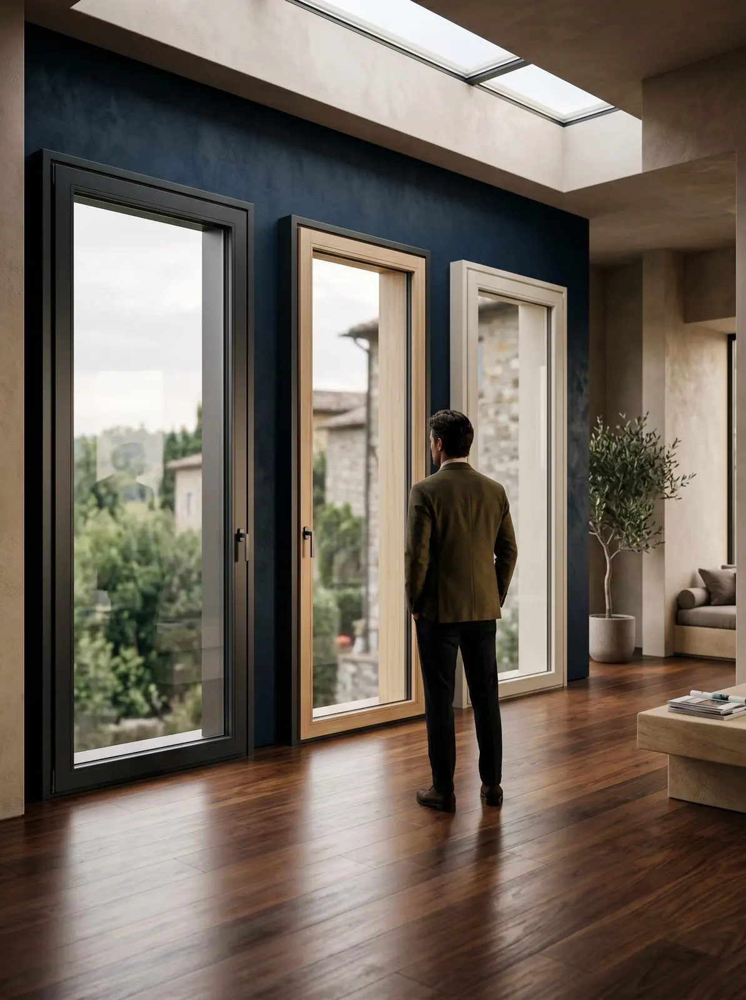
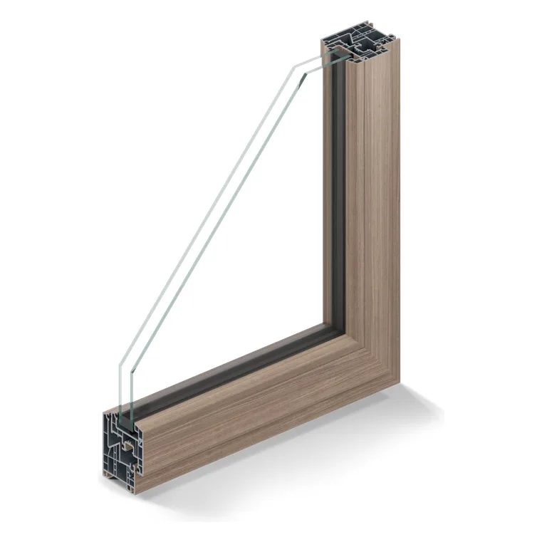

Termofibra. Il PVC con l’anima in fibra.
Linee squadrate, nodo centrale ridotto, più di 50 finiture. E un’anima in fibra al posto di gran parte del ferro.
A chi vuole le prestazioni del PVC con linee più sottili e moderne, a chi cerca un materiale sostenibile, a chi vuole tanti colori anche bicolore.
Il sistema P70 Evo è realizzato con PVC riciclato fino all'80% e un'anima in fibra che riduce l'uso del rinforzo in ferro: un'economia circolare al 100%. Profondità 70 mm, sei camere, tre guarnizioni.
Linee squadrate, nodo centrale ridotto e la possibilità di montare l'anta a scomparsa, incassando il profilo su tutti e quattro i lati. Nella versione Evo Design la maniglia è centrale, per la massima simmetria.
Lo progettiamo e lo costruiamo noi. Per questo possiamo personalizzare tutto.
Nella nostra officina di Vigano di Gaggiano, 4.000 m² fra showroom e produzione, nascono serramenti, persiane, grate e lavori su misura. Colori, finiture, misure e dettagli li decidi tu: ti aiutiamo a personalizzarlo.
E lo montano i nostri posatori interni. Il mercato lavora quasi sempre con squadre esterne; noi no, perché la differenza la fa il controllo dei dettagli.
CERTI.S · UNI 11673-2
produttori di serramenti e facciate
I dati che contano.
| Prestazione | Fino a | Norma |
|---|---|---|
| Trasmittanza termica Uw | 0,92 W/m²K con vetro Ug 0,6 · 1,18 con Ug 1,0 | EN ISO 10077-1 |
| Isolamento acustico | 46 dB | EN ISO 717-1 |
| Tenuta all'aria | Classe 4 | DIN EN 12207 |
| Pioggia battente | 9A | EN 12208 |
| Antieffrazione | WK2 | DIN EN 1627 |
Profondità 70 mm, 6 camere, 3 guarnizioni. Telaio L o Z40.
Finestre e portefinestre a una, due o tre ante, anta-ribalta e vasistas. Doppio o triplo vetro.
Più di 50 finiture, anche bicolore interno ed esterno: effetti legno realistici o colori matt. Maniglie bianco, argento, oro opaco, bronzo, nero opaco.

Sezione dalla scheda tecnica del sistema.
Valori «fino a» dichiarati nelle schede tecniche dei sistemi. I dati certificati del tuo serramento dipendono da misure e vetro: li trovi nella DOP che ti consegniamo.
In showroom si tocca.
Aperto e chiuso, nelle finiture vere. Ti spieghiamo pregi e limiti senza fretta.
Domande frequenti
Termofibra o PVC tradizionale?
Si può avere l'anta a scomparsa?
Dove lavoriamo
Da Gaggiano a tutta Milano e alle province di Monza e Brianza, Como, Lecco e Pavia. E non solo: con i nostri tecnici e i nostri posatori.

Vieni a vederlo con i tuoi occhi. Senza impegno.
Se hai le misure, portale: ti diamo un'idea più precisa. Come prenderle.